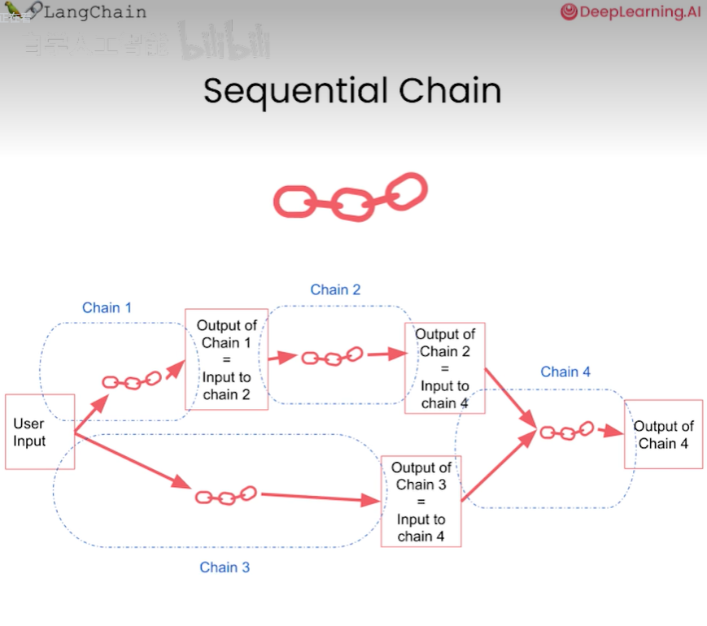

langchain-吴恩达
本篇blog是关于对吴恩达老师langchain视频的学习
视频链接如下：
吴恩达最新《LLM应用程序开发的LangChain》|langchain-for-llm-application-development|中英字幕
简直逆天！我居然只花了2小时就掌握了吴恩达教授讲的【LangChain+ChatGLM-6B】LLM应用开发实践！强烈推荐！！ 人工智能|深度学习
下面这个有英文字幕，但是有些地方感觉怪怪的
参考的相关资料
LangChain：https://www.langchain.asia/
https://blog.csdn.net/qq_36080693/article/details/131217876?spm=1001.2014.3001.5502
吴恩达最新Langchain课程学习笔记①丨Prompts, Models, Output parsers - 知乎 (zhihu.com)
精华笔记：吴恩达 x LangChain 《使用LangChain构建与数据对话的聊天机器人》（上）
精华笔记：吴恩达 x LangChain《基于LangChain的大语言模型应用开发》(上)
前言
大语言模型应用开发
一个应用可能需要多次调用LLM并解析输出，因此需要编写大量的粘合代码。
Langchain（最初是用于构建LLM应用的开源框架）能够加速开发，使得开发过程更加的轻松
Langchain专注于组合和模块化（composition and modularity）
- 拥有许多可与彼此或单独使用的个体组件（modular components）
- use case：这些模块化的组合方式形成了一系列将其转化为端到端的应用的方式，且容易入门（common ways to combine components）
Langchain常见的组件
- models
- prompts：即如何使模型实现有用和有趣的功能
- indexes：即将数据注入系统以与模型结合使用的方式
- chains：prompt+LLM+output parsing
- can be used as building blocks for longer chain
- agents：agent是一种令人兴奋的端到端用例类型，它使用模型作为推理引擎。（algorithms for getting LLMs to use tools）
精华笔记：吴恩达 x LangChain《基于LangChain的大语言模型应用开发》(上) (qq.com)
models prompts and parsers（解析器）
精华笔记：吴恩达 x LangChain《基于LangChain的大语言模型应用开发》(上) (qq.com)
模型使指支撑其中很多部分的语言模型，
prompts指的是创建输入以传递给模型的方式，
解析器则位于相反的一端，它涉及将这些模型的输出解析为更结构化的格式，以便您可以在下游执行操作。
我们反复提示一个模型，解析输出，所以Langchain提供了一套简单的抽象概念来做这类操作
langchain为一些常见的操作提供了提示（prompt，如总结，回答问题，调用api）；不用自己设计prompt
langchain不仅有prompt同时还有解析器
-
当你使用LLM构建一个复杂的应用程序时，你经常让LLM以某种格式生成其输出，比如使用特定的关键字；
- 比如react中的一些关键字thought，action，observation；这个prompt可以和一个解析器结合起来以提取出被标记为这些特定关键词的文本
-
可以指定LLM的输入；也可以让解析器正确解析 LLM的输出
-
提示模板可以和输出解析器结合在一起，以方便输入提示以特定格式输出，然后解析器暂停该输出将数据存储在python字典或其他一些数据结构中，使其以便下游处理
memory
精华笔记：吴恩达 x LangChain《基于LangChain的大语言模型应用开发》(上) (qq.com)
使用langchain来管理聊条或聊天机器人对话
当你与这些模型互动时，他们自然不记得你之前说了什么，也不记得之前对话的内容
me’mory
-
你如何记住你以前的对话部分，并将其输入到语言模型中，以便他们可以在你与他们互动的时候有这样的对话流程
- 多轮对话？？？？？
- 可以根据自己的想法去创建对话
- 利用langchain的memory.save_context({“input”:“hi”},{“output”:“cool”})
-
所以当你用一个大语言模型进行聊天对话时，大语言模型本身事物状态的，语言模型本身并不能记得你到目前为止的对话
- 而每次交易，每次对API终端的调用都是独立的
-
而聊天机器人有一段时间的内存知识因为通常有 rapid code提供了目前为止的完整对话，作为语言模型的上下文
-
因此内存可以明确的存储术语或目前为止的对话
-
但是随着对话变漫长，所需要的内存量变得非常大，而且向LLM发送大量令牌的成本也会增加
- 这是 ConversationBufferMemory
langchain提供了几种方便的存储器来存储和积累对话
- ConversationBufferWindowMemory
- ConversationTokenBufferMemory
- 需要指定LLM，不同LLM计算（计数，counting）token的方式是不同的
- ConversationSummaryBufferMemory
- 用LLM来写一个大目前为止的对话摘要，让这个成为记忆
- 如果没超过max_token_limit则直接存储；否则用summary
- 目的是为了保持信息的明确存储，且信息的显式存储量不超过我们指定的令牌数量
- 如何设置上限而不是让其任意增长
langchain实际上也支持额外的内存类型，其中最强大的是向量数据库存储器：如果你熟悉单词嵌入和文本嵌入，矢量数据库时加上存储的就是这种 embeddings
- 它可以用这种向量数据库检索出最相关的文本块，用向量数据库作为其memory
langchain也支持实体memory
- 这是用于当你想记住关于特定的人，特定的其他实体细节
- 比如你谈到一个特定的朋友，你可以让langchain记住关于这个朋友的事实
- 这将是一个实体的明确方式
使用多种记忆，如上面的对话记忆，另外还可以有实体记忆来回忆个人；
- 所以这种方式你可以记住也许是对话的摘要，再加上一种明确的方式来存储寡欲对话中重要任务的重要事实
传统的数据库也是很常见的（SQL）因此你可以回顾整个对话以便于auditing或者进一步改进system
Chains
langchain种最关键的部分即chain
chain通常将LLM与prompt结合在一起
有了这个block，你也可以把这些block堆一起来对你的文本或者其他数据进行一系列的操作
LLMChain
- 这是一个简单但是非常强大的链，它是我们将要讨论的许多链的基础
Sequential Chains
-
顺序链一个接一个地运行着一连串的链条
-
SimpleSequentialChain
- 这希望我们的sub chain只有一个输入和只返回一个输出
- 这里的子链可以是LLMChain
- SimpleSequencialChain(chains=[chain1,chain2])：可以称为整体(overall) simple chain
-
上面要求子链有一个输入和一个输出，多个输入或多个输出时
- 
- 用常规的（regular）sequential chain
- 要注意出入输出匹配正确，且名称排列一定要正确
- 适用于更加复杂的场景
- SequentialChain
-
一个非常普通但很基本的操作是将一个输入路由到一个链上，这取决于该输入是什么
一个很好的想象方法是如果你有多个子链其中每个子链有某种特定类型的输入，你可以有一个路由链（router chain）
- 首先决定将其传递给哪个子链，然后再将其传递给那个chain
- MultiPromptChain：这是一种特定类型的链，用于在多个不同提示模板之间进行路由；这个用来汇总用的，创建总体链路
- chain = MultiPromptChain(router_chain=router_chain,
destination_chains=destination_chains,
default_chain=default_chain, verbose=True
)
- chain = MultiPromptChain(router_chain=router_chain,
- LLMrouterChain：使用语言模型本身来路由不同的子链
- RouterOutputParse：路由器输出解析器，将LLM输出解析为可以在下游使用的字典，以确定使用哪个链以及该链的输入应该是什么。
- RouterOutputParser将LLM输出解析成一个字典，根据字典内容确定下游使用哪条链，以及链的输入应该是什么
- 他将帮助这个链路决定在哪些子链路之间进行路由
- 除了目标链我们还需要一个默认链，当路由器无法决定使用哪个子链时就会调用此链
Question and Anwser over Documents
精华笔记：吴恩达 x LangChain《基于LangChain的大语言模型应用开发》(下) (qq.com)
人类正在使用LLM构建的最常见的复杂应用之一是可以在文档之上或关于文档的问题上回答的系统
一个文本可能是从PDF文件、网页或某些公司的内部网内部文件种提取出来的，你能不能用LLM来回答关于这些文件的问题，以帮助用户活获得更深入的理解和获取他们所需要的信息
LLM可以根据从PDF文件、网页或公司内部文档中提取的文本来回答问题，这使得LLM能够与未经训练的数据结合起来，从而更灵活地适配不同应用场景。
- 引入linkchain的一些关键组件如embedding model and vector stores
- 这开始将这些语言模型与他们最初未经训练的数据结合起来，这使他们在你的应用种更加灵活和适应
要构建一个基于文档的问答系统，需要引入 LangChain 的更多关键组件，例如嵌入（Embedding）模型和向量存储（Vector Stores）。
RetrievalQA：在文件上做检索
还要文档加载器，被用来加载一些专有数据，这里用的使CSV格式，CSVLoader
最后引入向量存储，将从DocArray内存搜索矢量存储开始
-
DocArray in-memory search vector store:DocArrayInMemorySearch
-
这是一个内存（in - memory）向量存储，而且不需要连接到任何类型的外部数据库
- 这就是in-memory
-
接下来将导入一个索引，向量存储索引创建器（ VectorstoreIndexCreator）：这里创建一个内存方式的向量存储，传入上一步创建的️️加载器。**
-
from langchain.indexes import VectorstoreIndexCreator index = VectorstoreIndexCreator( vectorstore_cls=DocArrayInMemorySearch//指定向量存储类 ).from_loaders([loader])//接受一个文档加载器的列表，我们这里只关心一个加载器（loader），所以这就是我们在这里传递的内容 <!--code0-->
-
可以用一行代码（更容易上手）来做也可以分解成更详细的步骤来做（能够让你设置更多关于到底发生了什么的具体细节）
Stuff method
- 你只需要把所有的东西放到一个提示种，然后把它发送给语言模型，得到一个response
- 但并不是工作的很好
- 比如文件很大的时候
把所有的文件都当作独立的（可以batch操作），且需要更多的调用；
速度比较慢 ，调用多
这些方法可以用到其他的链种不仅仅是问答
mapreduce常用于summary
不同的链由很多事情要做
Evaluating LLM Applications
当使用LLM构建一个复杂的应用程序时，其中一个重要但是有时很棘手的步骤是——如何评估你的应用程序做的如何，他是否符合一些准确性标准
这些应用程序确实由血多不同的步骤组成的链条（chain）和序列（sequence）
- 第一个要做的事就是了解每个步骤的具体内容
- 一些工具可以被认为是visualizer or debuggers
- 但是在很多不同的数据点上获得一个更加全面的画面事非常有用的
- 在很多不同的数据电商了解模型是如何做的
- 哪些是我们想要评估的数据点
评估有两个目的：
- 检验LLM应用是否达到了验收标准
- 分析改动对于LLM应用性能的影响
基本的思路就是利用语言模型本身和链本身，来辅助评估其他的语言模型、链和应用程序。
langchain.debug = True
- 这种调试模式可以用来强调什么地方出了问题
- 拥有这些所有信息对于理解发生了什么事真的很有帮助
打印更多的信息
通常情况下，当一个错误的结果被返回时，它不一定是语言模型本身出问题，可能是检索出了问题
语言模型做评估可以充分理解语意，而不仅仅是做精确匹配比如正则化匹配
Agent
有时人们会认为大语言模型是一个知识库
- 就像它学会了记忆大量信息，也许来自于互联网
但是我（吴恩达）认为，更有用的方式是将大语言模有时视为一个推理引擎
- 这种情况下，你可以给它一些文本块或者其他信息来源
agent是最强大的部分之一也比较新
将语言模型作为一个agent的推理引擎
1 | agent= initialize_agent( |
- agent参数
agent参数 CHAT_ZERO_SHOT_REACT_DESCRIPTION中的CHAT部分，表示这是一个专门为Chat模型优化的代理。REACT部分表示一种组织Prompt的技术，能够最大化语言模型的推理能力。
- handle_parsing_errors
true表示当内容无法被正常解析时，会将错误内容传回语言模型，让它自行纠正。
从打印出来的中间步骤详细记录中，我们可以看到几个关键词，其表示的含义分别是：
| 关键词 | 表示含义 |
|---|---|
| Thought | LLM在思考的内容 |
| Action | 执行特定的动作 |
| Observation | 从这个动作中观察到了什么 |
像coplit，甚至启用代码解释器插件的ChatGPT，他们正在做的事情之一就是他们正在使用语言模型来编写代码，然后执行这些代码
agent的一大好处就是可以把它连接到你自己的信息源，自己的API，自己的数据
使用 Python 代理工具
类似于ChatGPT的代码解释器，Python 代理工具可以让语言模型编写并执行Python代码，然后将执行的结果返回给代理，让它决定下一步的操作。
我们的任务目标是对一组客户名单按照姓氏和名字进行排序。
1 | agent = create_python_agent( |
REPL基本上是一种与代码交互的方式，你可以把它看作是一个jupyter笔记本,agent可以用这个REPL执行代码，然后将其运行，然后我们会得到一些结果；
这些结果将被传回给agent，所以它可以决定下一步该增么做
在编写自定义的API时需要写一个非常详细的文档字符串，这是因为agent将用于知道什么时候应该调用工具以及应该如何调用这个工具
conclusion
多用多学！！！！！